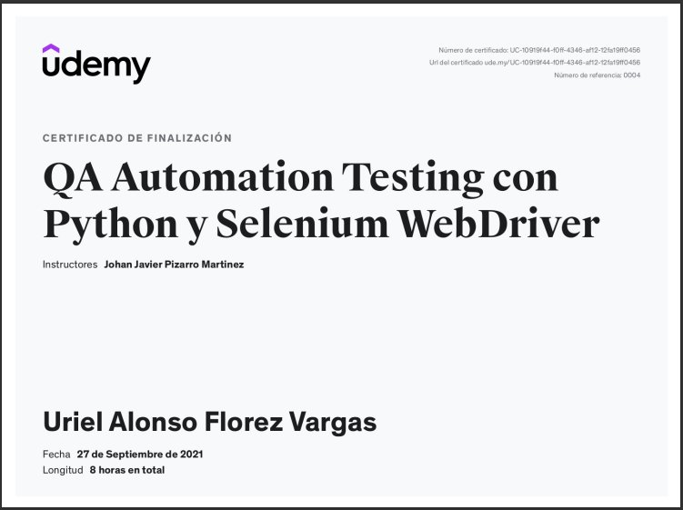

Estudios
Ingeniero de Software
Politécnico Grancolombiano
2015-2020
Diseñando Páginas web con Bootstrap 4

Universidad Austral (Ofrecido por Coursera)
20 Horas - 2020
Manejo de Pruebas de Software

Servicio Nacional de Aprendizaje SENA
40 Horas - 2021
Curso de Fundamentos De Ingeniería de Software
Platzi & APPS.co (Impulsando el emprendimiento digital en colombia)
15 Horas - 2021
QA Automation Testing con Python y Selenium WebDriver

Udemy
8 Horas - 2021
Metodologia de la Programacion de Sistemas Informaticos

Servicio Nacional de Aprendizaje SENA
40 Horas - 2021
Introducción al Testing de Software

Udemy
5 Horas - 2022
Tester
Capacitate para el Empleo Fundacion Carlos Slim
8 Horas - 2022
Universidad CSS Aprende CSS desde Cero a Experto!
Udemy
7.5 Horas - 2022
Universidad HTML Aprende HTML desde Cero a Experto!

Udemy
6.5 Horas - 2022
Master en programación fullstack JavaScript Angular Node

Udemy
28.5 Horas - 2022
De Cero a Programador: Python desde Cero
Udemy
4.5 Horas - 2022
Experiencia Laboral
Desarrollador Junior
BRM S.A. Grandes Interacciones.
Me desempeño como tester manual para los desarrollos de la compañia, llevando los registro de las incidencias y los reportes de las mismas. Todo con los parametros establecidos por la compañia.
Marzo 2021 - Actualmente
Conductor de Presidencia
BRM S.A. Grandes Interacciones.
Mis funciones eran el transporte de la presidenta y el visepresidente de la compañia y su familias, conduciendo vehículos de alta gama y blindados, era responsable de programar los mantenimientos de los vehículos, colaborar con las actividades personales de la presidencia.
Marzo 2010 - Febrero 2021
Conductor de Presidencia
Unicorp S.A
Mis funciones eran el transporte de la presidenta y el visepresidente de la compañia y su familias, conduciendo vehículos de alta gama y blindados, era responsable de programar los mantenimientos de los vehículos, colaborar con las actividades personales de la presidencia.
Junio 2009 - Febrero 2010
Supervisor de vehículos en carretera
Transportes y servicios TRANSER S.A
Mis funciones eran el acompañamiento en motocicleta de los vehículos en el perimetro urbano haciendo el recorrido hasta su lugar de destino en la ciudad o acompañando la salida de los mismos hasta puntos estrategicos definidos por la compañia.
Julio 2005 - Febrero 2009
Habilidades